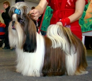

<table border="0" class="layout">
    <tbody>
        <tr>
            <td valign="top">
                <div class="holster">
                    <div style="text-align: center;" class="block_container s3 b-text b-static-text user_css_12816005438" id="e_127780592856">
                        <div class="block_container s3 b-image txt-center" id="e_128281732269"><span></span></div>
                        <p>Наши заводчики:</p>
                        <p style="text-align: center;"><em><strong>Авдонина Марина -</strong></em></p>
                        <div style="text-align: center;" class="block_container s3 b-text b-static-text user_css_12816005438" id="e_127780592856"><sup><em>добро пожаловать к нам:</em></sup></div>
                        <div style="text-align: center;" class="block_container s3 b-text b-static-text user_css_12816005438"><strong><em>&nbsp;</em></strong><a href="http://shihtzu.ru/home.htm"><em><strong>"Гол Ден Мери"</strong></em></a> (<span style="text-decoration: underline;">есть щенки!</span>)</div>
                        <p style="text-align: center;"><em><strong>Фёдорова Ирина - <br /></strong></em></p>
                        <div style="text-align: center;" class="block_container s3 b-text b-static-text user_css_12816005438" id="e_127780592856"><sup><em>добро пожаловать к нам:</em></sup></div>
                        <div style="text-align: center;" class="block_container s3 b-text b-static-text user_css_12816005438"><a href="http://www.lhasa-apso2.narod.ru/"><em><strong>"Из Звёздного Дебюта"</strong></em></a> (<span style="text-decoration: underline;">есть щенки!</span>)</div>
                        <p style="text-align: center;"><em><strong>Суворов</strong></em><em><strong>а Татьяна -</strong></em></p>
                        <div style="text-align: center;" class="block_container s3 b-text b-static-text user_css_12816005438" id="e_127780592856"><sup><em>добро пожаловать к нам:</em></sup></div>
                        <div style="text-align: center;" class="block_container s3 b-text b-static-text user_css_12816005438" id="e_127780592856"><a href="http://www.lhasa-apso2.narod.ru/"><em><strong>&nbsp;</strong></em></a><em><strong><a href="http://www.grand-stats.narod.ru/"><em><strong>"Гранд Стат`с"</strong></em></a></strong></em></div>
                        <div style="text-align: center;" class="block_container s3 b-text b-static-text user_css_12816005438"><em><strong><em><strong><br /></strong></em></strong></em></div>
                        <div style="text-align: center;" class="block_container s3 b-text b-static-text user_css_12816005438"><em><strong><em><strong>Кондрашова Ольга, </strong></em></strong></em></div>
                        <div style="text-align: center;" class="block_container s3 b-text b-static-text user_css_12816005438"><em><em>тел:</em><strong><em><strong> </strong></em></strong><em>392-53-62 </em></em><span style="text-decoration: underline;">есть щенки!<br /><a href="http://smayliki.ru/smilie-884878695.html" target="_blank"></a></span><em><strong><em><strong><br /></strong></em></strong></em></div>
                        <p style="text-align: center;"><em>&nbsp;</em></p>
                        <p> </p>
                    </div>
                    <div class="block_container s3 b-image txt-center" id="e_128281732269"><span>&nbsp;</span></div>
                </div>
            </td>
            <td>
                <div class="holster">
                    <div class="block_container s3 b-text b-static-text user_css_12816005438" id="e_12828173816">
                        <p style="text-align: center;"><span style="color: #006600;"><span style="color: #0000ff;"><strong>Ши тцу</strong></span></span></p>
                        <p style="text-align: justify;"><span style="color: #006600;"><span style="color: #0000ff;"><strong>Из истории породы:</strong> происхождение этой породы окружено тайной, однако кое-какие намёки можно найти в учении ламаизма - религии тибета, одной из форм буддизма. Манджушри (существо, олицетворяющее мудрость), согласно легенде, сопровождает маленькая собака, способная превращаться во льва. С нею обычно отождествляли тибетскую породу лхасских апсо - обладательниц львиного экстерьера. Духовный глава Тибета далай-лама часто дарил лхассикх апсо китайским императорам. Вполне вероятно, что когда эти экзотические собаки попали в Китай, их скрестили с пекинесами, получив породу, известную сейчас как ши-тцу. Из-за отказа китайцев продавать или экспортировать ши-тцу эти собаки попали в Великобританию и в США только в 1930-е годы, однако быстро завоевали признание на выставках. В России это очень популярная порода декоративных собак. </span></span></p>
                        <p style="text-align: justify;"><span style="color: #006600;"><span style="color: #0000ff;"><strong>Общая характеристика:</strong> небольшая, подвижная, жизнерадостная, энергичная собака. Отважная, с независимым характером, но послушная, ласковая и нежная. Она умна и несколько надменная, обожает человеческое общество. На удивление, могут служить хорошими сторожевыми собаками.</span></span></p>
                        <p style="text-align: justify;"><span style="color: #006600;"><span style="color: #0000ff;"><strong>Содержание и уход:</strong> вполне достаточно не долго, но регулярно выгуливать собаку и давать ей возможность побегать без поводка. Каждый день расчёсывайте собаку щёткой из натуральной щетины. Не пренебрегайте этим занятием, иначе потом будет сложно и болезненно для собаки удалять свалявшиеся шерсть. Следите, чтобы чёлка не попадала в глаза, а в ушах не накапливались отмершие волосы и грязь.</span></span></p>
                        <p style="text-align: justify;"><span style="color: #006600;"><span style="color: #0000ff;"><strong>Размеры: </strong>рост 23-28 см. Вес 4,5-8 кг.<br /></span></span></p>
                        <p style="text-align: justify;"><span style="color: #006600;"><span style="color: #0000ff;">_________________________________</span></span></p>
                        <p style="text-align: justify;"><span style="color: #006600;">&nbsp;</span></p>
                    </div>
                </div>
            </td>
        </tr>
    </tbody>
</table>​
